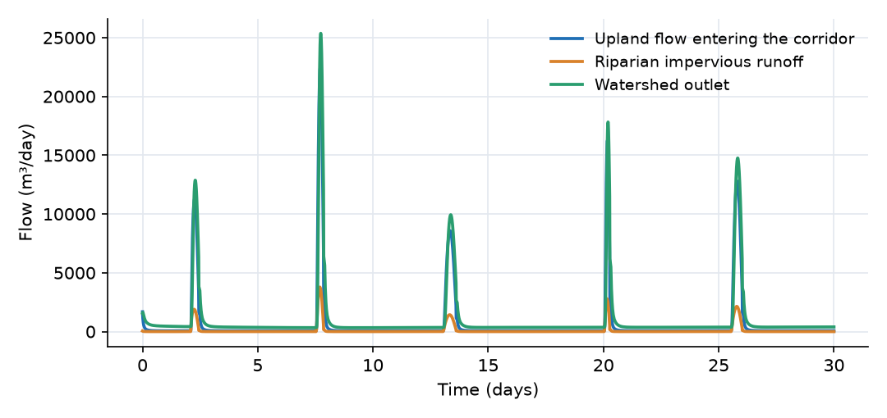
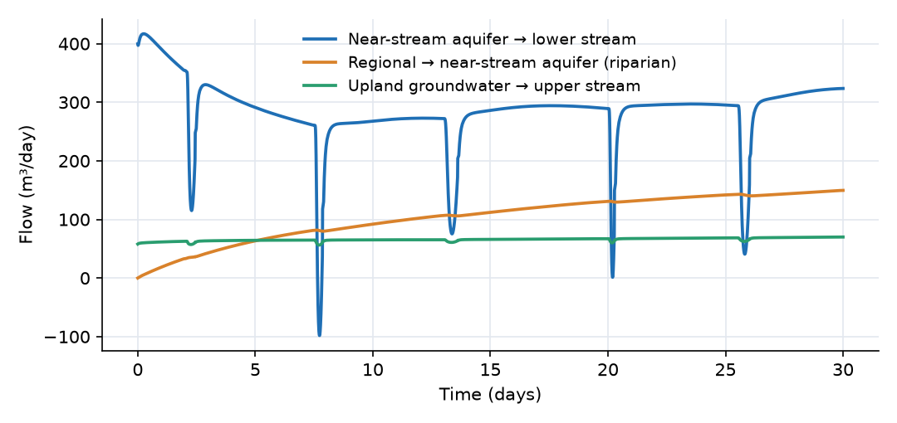
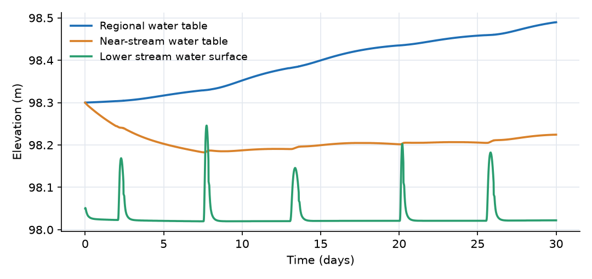
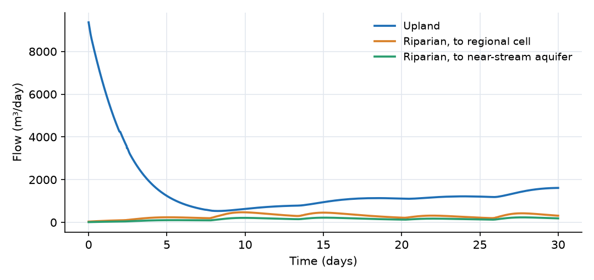

What this model represents
Land use and the stream corridor both shape a watershed's response. Upland land with roads and roofs sends quick storm runoff to the headwaters. Along the stream, the riparian zone has shallow groundwater that is in direct contact with the channel. During a storm the rising stream pushes water into its banks (bank storage); afterwards that water, together with groundwater arriving from the hillslope, drains back over days to weeks. This intermediate store is what makes observed baseflow fall quickly for a week or two after each event before settling into a slow seasonal decline.
This model is a 100 ha watershed with two units:
- an 80 ha upland with mixed land use (
Mixed_Hydrologic_Response_Unit, 15% impervious), draining to a headwater reach; - a 20 ha riparian corridor (
Riparian_Urban_HRU, 10% impervious) along the lower reach, with a near-stream aquifer.
The upland drains through the riparian corridor in the sense that all its water reaches the outlet along the lower reach, where it interacts with the riparian groundwater. The composites do not accept surface or groundwater inflow from another unit (their only inflow ports are snowmelt links and, for the riparian unit, lateral flow between unconfined cells), so the stream is the connection.
How it works
The two units. Both composites have a pervious and an impervious surface, each draining through its own internal reach, and three soil layers (thicknesses D/7, 2D/7 and 4D/7, D being the depth to groundwater) under the pervious surface. In the output, member names carry the unit name as a prefix, for example Riparian__Near_Stream_Aquifer_piezometric_head.
| Upland (Mixed HRU) | Riparian (Riparian Urban HRU) | |
|---|---|---|
| Area A, impervious fraction f_i | 80 ha, 0.15 | 20 ha, 0.10 |
| Impervious / pervious surface | 12 ha / 68 ha | 2 ha / 18 ha |
| Soil layers | 0.5, 1.0, 2.0 m | 0.24, 0.49, 0.97 m |
| Soil (all layers) | K_sat 0.5 m/day, α 1.5 1/m, n 1.4, θ_sat 0.42, θ_res 0.06 | same |
| Groundwater | one Groundwater cell, 68 ha, porosity 0.25 |
regional Unconfined Groundwater cell, 15 ha, S_y 0.2, plus near-stream aquifer, 5 ha, S_y 0.25 |
| Recharge | constant conductivity 0.05 m/day | unsaturated conductivity of Soil_3 |
| Initial water table | 103.0 m (3.5 m below the soil column) | 98.3 m (at the base of the soil column) |
Surfaces and channels. Each surface drains to its reach by sheet flow, Q = 86400·(W/n)·S^0.5·max(d − d_s, 0)^(5/3) in m³/day, with width W, slope S, roughness n, ponded depth d and depression storage d_s. The internal reaches, the two stream segments and the links between them use Manning's equation driven by the head difference between neighboring segments, Q = 86400·(1/n̄)·A_u·R^(2/3)·((h_1 − h_2)/L̄)^0.5. Infiltration, percolation between soil layers and evapotranspiration (E = 0.8·ET₀·A_1·θ_1/θ_sat) are as in the other HRUs.
Upland groundwater. The Mixed HRU uses the stock Groundwater cell, with head h = base + b + (θ_g − φ)/S_s. Setting S_s = φ/b = 0.031 1/m (b = 8 m) makes this the height of a free water table. Recharge is Q_r = A_p·K_r·(h_3 − h_g)/L with K_r = 0.05 m/day. The cell discharges to the upper stream through Upland_baseflow, Q = A_b·K·(h_g − h_stream)/L.
Riparian groundwater. The riparian unit splits its aquifer in two:
- The regional cell (area A·(1 − f_r) = 15 ha, f_r = 0.25 being the near-stream fraction) receives recharge from
Soil_3over 13.5 ha. It drains into the near-stream aquifer through the internalhillslope_to_near_streamlink, Q = c · ½(K_r + K_n) · ½(b_r + b_n) · W · (h_r − h_n)/L with W = 2000 m (both sides of the 1000 m stream), L = 100 m (the hillslope length), K the cells' conductivities (2 and 5 m/day), b their saturated thicknesses and c a cutoff that stops the outflow as the upgradient cell approaches its residual thickness. - The near-stream aquifer (A·f_r = 5 ha) receives recharge over 4.5 ha and exchanges water with the lower stream through
Bank_exchange, Q = K·A_b·(h_n − h_stream)/L_b. Because the path is short (12.5 m), it responds within hours and in both directions.
Both cells are unconfined, with head h = base + V/(S_y·area). Recharge into them uses the unsaturated conductivity of the bottom soil layer,
Q_r = A_r·K_sat,3·[k_r(S_e,3)·(h_3 − h_g)⁺ − (h_g − h_3)⁺]/L, L = (d_3 + b)/2
so it can also run upward when the water table rises above the soil head.
What to look for in the results
- Storm runoff is impervious runoff. The pervious surfaces produce almost no runoff (rain never exceeds their infiltration capacity). The upland impervious surface delivers 17,600 m³ (99% of the rain on it) and the riparian impervious surface 2,900 m³. The outlet peaks at 25,400 m³/day (0.29 m³/s) on day 7.7.
- The corridor adds baseflow. Between storms only 60 to 70 m³/day of upland baseflow enters the corridor, but the outlet carries 330 to 390 m³/day. The difference is the near-stream aquifer discharging to the lower stream. Over the month the bank exchange delivers 8,500 m³, more than the riparian runoff and four times the upland baseflow (2,000 m³).
- Bank storage. In every storm the lower stream rises by up to 0.23 m and the bank exchange falls (from about 350 to 115 m³/day on day 2.3). In the largest storm (day 7.7) it reverses: for about four hours the stream loses up to 98 m³/day to its banks. The water returns over the following days. The upland baseflow dips in the same way when the upper stream rises.
- Two time scales. The near-stream water table stays within 0.12 m of its start because the stream controls it. The regional water table rises 0.19 m with recharge, and its drainage into the near-stream aquifer grows from 0 to 150 m³/day. This slow store sustains the near-stream discharge between storms.
- Water balance (30 days, 100 ha):
| Term | m³ | mm over 100 ha |
|---|---|---|
| Rain | 148,672 | 148.7 |
| Evapotranspiration | −36,685 | −36.7 |
| Outflow at the outlet | −31,299 | −31.3 |
| Increase in upland soil water | 27,238 | 27.2 |
| Increase in upland groundwater | 43,942 | 43.9 |
| Increase in riparian soil water | 4,737 | 4.7 |
| Increase in riparian groundwater | 4,741 | 4.7 |
| Increase in surface, reach and stream storage | 15 | 0.0 |
The residual is 16 m³ (0.01% of the rain).
Assumptions and limitations
- The upland groundwater cell of the Mixed HRU has the pervious area only (68 ha), not the whole unit. Per unit of recharge its water table therefore rises 1/(1 − f_i) = 1.18 times faster than an aquifer under the whole unit would. The Urban and Riparian HRUs give the aquifer the whole area.
- The upland recharge uses a constant conductivity. With the water table 3.5 m below the soil column this makes recharge only weakly dependent on soil moisture, and the first days show the drainage of the initial soil water.
- The upland groundwater cannot flow into the riparian aquifer: the two units use different groundwater cell types and no port connects them. Upland groundwater reaches the corridor only as baseflow in the stream.
- Each unit is laterally uniform. The riparian near-stream aquifer is one cell for both banks.
- The model starts from assumed initial states and runs for one month, so the groundwater stores are still adjusting at the end. A longer spin-up would be needed for a study.
- There is no evapotranspiration from the riparian groundwater, although riparian vegetation often draws on it (the Urban HRU has an optional source for this; the Riparian HRU does not).
Model diagram
Hover a block or link to see its name and type. Arrows show the positive flow direction.
Components
Click a component to see every property set in the model file, with units and meaning.
Blocks 3
Storage compartments: each holds water (and dissolved or particulate mass) and has a state that evolves in time.
Upper_streamTrapezoidal Channel Segment · open_channelHeadwater reach: 1000 m trapezoidal channel, 2 m base, 2:1 side slopes, n = 0.035, bed at 101.5 m. Receives runoff and baseflow from the upland.
Trapezoidal Channel Segment: Trapezoidal Channel Segment
| Property | Value | Unit | Meaning |
|---|---|---|---|
| Base Width | 2 | m | The width of the bottom (flat) portion of the trapezoidal channel cross-section. |
| Side Slope | 2 | The horizontal to vertical ratio of the sloped sides (e.g., 2 means 2 horizontal to 1 vertical). | |
| Manning's Roughness Coefficient | 0.035 | Roughness coefficient used in Manning's equation to estimate flow resistance. | |
| Bottom Elevation | 101.5 | m | Elevation of the channel bottom relative to the model’s vertical datum. |
| Segment length | 1000 | m | |
| Initial Water Depth | 0.05 | m | Depth of water in the channel segment. If depth is initially unknown, it is estimated based on storage. |
Lower_streamTrapezoidal Channel Segment · open_channelReach through the riparian corridor: 1000 m, 3 m base, 2:1 side slopes, n = 0.035, bed at 98.0 m. Receives the headwater flow, the riparian runoff and the near-stream exchange.
Trapezoidal Channel Segment: Trapezoidal Channel Segment
| Property | Value | Unit | Meaning |
|---|---|---|---|
| Base Width | 3 | m | The width of the bottom (flat) portion of the trapezoidal channel cross-section. |
| Side Slope | 2 | The horizontal to vertical ratio of the sloped sides (e.g., 2 means 2 horizontal to 1 vertical). | |
| Manning's Roughness Coefficient | 0.035 | Roughness coefficient used in Manning's equation to estimate flow resistance. | |
| Bottom Elevation | 98 | m | Elevation of the channel bottom relative to the model’s vertical datum. |
| Segment length | 1000 | m | |
| Initial Water Depth | 0.05 | m | Depth of water in the channel segment. If depth is initially unknown, it is estimated based on storage. |
Outletfixed_headFixed-head boundary at 97 m at the watershed outlet. Its storage starts at zero and accumulates the outflow.
fixed_head: Fixed-head boundary
| Property | Value | Unit | Meaning |
|---|---|---|---|
| Head | 97 | m | |
| Initial Storage | 0 | m3 |
Composite blocks 2
Pre-assembled groups of blocks and links that behave as a single unit.
UplandMixed_Hydrologic_Response_Unit · mixed_hydrologic_response_unitMixed-landuse upland unit (Mixed_Hydrologic_Response_Unit): 80 ha with surface at 110 m, 15% directly connected impervious (roads, roofs) and 85% pervious land over 3.5 m of loam. Its groundwater cell starts with the water table at 103 m. Its two surfaces drain through 600 m internal reaches to Upper_stream.
Mixed_Hydrologic_Response_Unit): 80 ha with surface at 110 m, 15% directly connected impervious (roads, roofs) and 85% pervious land over 3.5 m of loam. Its groundwater cell starts with the water table at 103 m. Its two surfaces drain through 600 m internal reaches to Upper_stream.Mixed_Hydrologic_Response_Unit: A mixed-land-surface HRU for GIS-derived area fractions. Total HRU area is partitioned by impervious_fraction. Catchment receives area*(1-impervious_fraction) and remains coupled to Soil_1, Soil_2, Soil_3 and Groundwater. Impervious_Catchment receives area*impervious_fraction and has no infiltration, soil, or groundwater connection. Each surface drains through its own Trapezoidal Channel Segment used for local surface-runoff routing. Groundwater is exposed through alternative groundwater_to_stream and Linear_baseflow ports so groundwater discharge/baseflow remains separate from direct surface runoff; use only one for the same physical pathway. groundwater_link remains available for groundwater-to-groundwater connections, and groundwater_to_fixedhead remains available for boundary use.
| Property | Value | Unit | Meaning |
|---|---|---|---|
| Total plan area of the mixed hydrologic response unit | 800000 | m2 | Total HRU area before land-surface partitioning. Catchment, soils and groundwater receive the non-impervious fraction; Impervious_Catchment receives the impervious fraction. |
| Impervious fraction of the HRU plan area | 0.15 | GIS-derived fraction of the total HRU area assigned to Impervious_Catchment. This mixed component is intended only for 0 < impervious_fraction < 1. The remaining fraction, 1-impervious_fraction, is assigned to Catchment, the soil profile, groundwater, and recharge interface. | |
| Ground surface elevation | 110 | m | Ground-surface datum for the HRU. It sets the Catchment elevation, soil-layer elevations, Groundwater bottom elevation, and bottom elevations of the two local routing reaches. For GIS-generated watershed models, GIStoOHQ should assign reach/channel elevations consistently with DEM-derived downstream elevations so Trapezoidal_Channel_link has a physically meaningful hydraulic-head gradient. |
| Depth from the ground surface to the water table | 3.5 | m | Total thickness of the unsaturated profile. It is split between the three layers in a 1:2:4 ratio, so they are one seventh, two sevenths and four sevenths of this value. |
| Thickness of the groundwater cell | 8 | m | Saturated thickness below the water table. Its bottom elevation is the surface elevation less the depth to groundwater less this thickness. |
| Precipitation source | Rain | Applied to both catchment surfaces. | |
| Evapotranspiration source (top soil layer only) | ET | Applied to the uppermost soil layer only; the deeper layers and the groundwater cell are not subject to evapotranspiration. | |
| Shared slope of the infiltrating and impervious catchment surfaces | 0.04 | Average surface slope applied to both Catchment and Impervious_Catchment. GIStoOHQ may later provide separate surface-specific slopes if available. | |
| Shared overland-flow width of the infiltrating and impervious catchment surfaces | 4000 | m | Overland-flow width applied to both Catchment and Impervious_Catchment. GIStoOHQ may later provide separate widths if derived from GIS geometry. |
| Manning roughness coefficient of the infiltrating catchment surface | 0.15 | ||
| Depression storage depth of the infiltrating catchment surface | 0.005 | m | |
| Surface rainfall-to-runoff multiplier | 1 | Fixed at 1 for both catchments. GIS imperviousness is represented by area partitioning rather than by runoff coefficient. On Catchment, infiltration is represented explicitly through the surfacewater_to_soil_link and subsequent soil/groundwater processes. On Impervious_Catchment, there is no infiltration link. | |
| Manning roughness coefficient of the impervious catchment surface | 0.015 | ||
| Depression storage depth of the impervious catchment surface | 0.0015 | m | |
| Saturated hydraulic conductivity of the soil profile | 0.5 | m/day | Shared by all three layers: they discretise one soil profile rather than representing different materials. |
| van Genuchten α of the soil profile | 1.5 | 1/m | |
| van Genuchten n of the soil profile | 1.4 | ||
| Saturated moisture content of the soil profile | 0.42 | ||
| Residual moisture content of the soil profile | 0.06 | ||
| Specific storage of the soil profile | 0.01 | 1/m | |
| Initial moisture content of the soil layers | 0.23 | Initial condition for all three layers. Each layer's initial storage follows from its own area, thickness and this value. | |
| Hydraulic conductivity of the soil-aquifer interface | 0.05 | m/day | Governs recharge from the bottom soil layer into the groundwater cell. Set it equal to K_sat for a homogeneous profile, or lower it to represent a clogging layer or aquitard at the water table. |
| Hydraulic conductivity of the groundwater cell | 2 | m/day | Hydraulic conductivity of the groundwater cell. Together with groundwater_to_stream connector properties and the head difference between Groundwater and the receiving stream/reach, this controls Darcy-style groundwater discharge. Linear_baseflow uses its own recession_rate instead, so groundwater_K does not control that connector. |
| Porosity of the groundwater cell | 0.25 | ||
| Specific storage of the groundwater cell | 0.03125 | 1/m | |
| Initial moisture content of the groundwater cell | 0.1406 | Initial groundwater moisture content. The default equals the default groundwater porosity (0.4), giving a saturated initial condition and placing the groundwater head at the top of the cell under the confined formulation. Groundwater is exposed externally so GIStoOHQ can connect it to the watershed reach as a baseflow source. | |
| Base width of the internal routing reach connected to Catchment | 1 | m | |
| Side slope of the internal routing reach connected to Catchment | 2 | ||
| Manning roughness coefficient of the internal routing reach connected to Catchment | 0.05 | ||
| Length of the internal routing reach connected to Catchment | 600 | m | |
| Initial water depth in the internal routing reach connected to Catchment | 0.01 | m | |
| Base width of the internal impervious routing reach | 1 | m | |
| Side slope of the internal impervious routing reach | 2 | ||
| Manning roughness coefficient of the internal impervious routing reach | 0.02 | ||
| Length of the internal impervious routing reach | 600 | m | |
| Initial water depth in the internal impervious routing reach | 0.01 | m |
RiparianRiparian_Urban_HRU · riparian_urban_hruRiparian corridor unit (Riparian_Urban_HRU): 20 ha along the lower stream with surface at 100 m, 10% impervious, and only 1.7 m of soil above a shallow water table at 98.3 m. Its groundwater is split into a regional cell (15 ha, specific yield 0.2) and a near-stream aquifer (5 ha, specific yield 0.25) that exchanges water with Lower_stream.
Riparian_Urban_HRU): 20 ha along the lower stream with surface at 100 m, 10% impervious, and only 1.7 m of soil above a shallow water table at 98.3 m. Its groundwater is split into a regional cell (15 ha, specific yield 0.2) and a near-stream aquifer (5 ha, specific yield 0.25) that exchanges water with Lower_stream.Riparian_Urban_HRU: Total HRU area is partitioned by min(impervious_fraction*impervious_multiplier, 0.95) into a pervious Catchment over Soil_1..Soil_3 and an Impervious_Catchment; each surface drains through its own Trapezoidal Channel Segment. Below the soils there are two unconfined groundwater cells: the regional Groundwater (area*(1-near_stream_fraction)) and the Near_Stream_Aquifer (area*near_stream_fraction), each recharged from Soil_3 in proportion to its area (soil_to_unconfined_groundwater_link). The regional cell drains into the near-stream aquifer (internal UC_groundwater_link, hillslope_link_width / hillslope_link_length) and, optionally, directly to the stream through the regional_groundwater_to_stream port (long hillslope path), and exchanges laterally with neighbouring units (UC_groundwater_link port); the near-stream aquifer exchanges with the stream in both directions through the unconfined_groundwater_to_stream port (short path: bank storage during events, drainage over days to weeks after them). No evapotranspiration from groundwater.
| Property | Value | Unit | Meaning |
|---|---|---|---|
| Total plan area of the Urban HRU | 200000 | m2 | Total HRU plan area. Pervious catchment, soil layers and the recharge interface receive area*(1-impervious_fraction); the impervious catchment area*impervious_fraction; the groundwater cell the whole area. |
| Impervious fraction of the HRU plan area | 0.1 | Directly connected impervious fraction (DCIA) of the total area, before impervious_multiplier: the share of the land whose runoff reaches a storm drain or the stream without crossing pervious ground (not the total impervious area). The Impervious_Catchment receives area*min(impervious_fraction*impervious_multiplier, 0.95); the pervious Catchment, the soil layers and the recharge interface receive the rest; the Groundwater cell receives the whole area. | |
| Multiplier on the impervious fraction (calibration) | 1 | The impervious area is area*min(impervious_fraction*impervious_multiplier, 0.95). Keep 1 unless calibrating the directly connected impervious fraction. | |
| Near-stream aquifer fraction of the unit area | 0.25 | Share of the unit occupied by the near-stream (riparian) aquifer. It takes this share of the plan area (the regional Groundwater the rest) and of the recharge from Soil_3. | |
| Ground surface elevation | 100 | m | Ground-surface datum for the HRU. It sets the Catchment elevation, soil-layer elevations, Groundwater bottom elevation, and bottom elevations of the two local routing reaches. For GIS-generated watershed models, GIStoOHQ should assign reach/channel elevations consistently with DEM-derived downstream elevations so Trapezoidal_Channel_link has a physically meaningful hydraulic-head gradient. |
| Depth from the ground surface to the water table | 1.7 | m | Total thickness of the unsaturated profile. It is split between the three layers in a 1:2:4 ratio, so they are one seventh, two sevenths and four sevenths of this value. |
| Thickness of the groundwater cell | 8 | m | Thickness of the groundwater cell from its base to the bottom of the soil column. Its base elevation is the surface elevation less the depth to groundwater less this thickness; it also sets the recharge flow path. |
| Residual thickness of the groundwater cell | 0 | m | Saturated thickness above the cell base that lateral flow to neighbouring units (UC_groundwater_link) cannot remove; for example the depth of the base below the receiving stream bed, so that lateral flow cannot draw the water table below the stream. |
| Precipitation source | Rain | Applied to both catchment surfaces. | |
| Evapotranspiration source for the top soil layer (Soil_1) | ET | Applied to Soil_1. A second, optional source (Evapotranspiration_2) can be attached to Soil_2 and Soil_3. The groundwater cells have no evapotranspiration. | |
| Shared slope of the infiltrating and impervious catchment surfaces | 0.02 | Average surface slope applied to both Catchment and Impervious_Catchment. GIStoOHQ may later provide separate surface-specific slopes if available. | |
| Shared overland-flow width of the infiltrating and impervious catchment surfaces | 2000 | m | Overland-flow width applied to both Catchment and Impervious_Catchment. GIStoOHQ may later provide separate widths if derived from GIS geometry. |
| Manning roughness coefficient of the infiltrating catchment surface | 0.2 | ||
| Depression storage depth of the infiltrating catchment surface | 0.005 | m | |
| Surface rainfall-to-runoff multiplier | 1 | Fixed at 1 for both catchments. GIS imperviousness is represented by area partitioning rather than by runoff coefficient. On Catchment, infiltration is represented explicitly through the surfacewater_to_soil_link and subsequent soil/groundwater processes. On Impervious_Catchment, there is no infiltration link. | |
| Manning roughness coefficient of the impervious catchment surface | 0.015 | ||
| Depression storage depth of the impervious catchment surface | 0.0015 | m | |
| Saturated hydraulic conductivity of soil layer 1 | 0.5 | m/day | |
| Saturated hydraulic conductivity of soil layer 2 | 0.5 | m/day | |
| Saturated hydraulic conductivity of soil layer 3 | 0.5 | m/day | |
| van Genuchten α of soil layer 1 | 1.5 | 1/m | |
| van Genuchten α of soil layer 2 | 1.5 | 1/m | |
| van Genuchten α of soil layer 3 | 1.5 | 1/m | |
| van Genuchten n of soil layer 1 | 1.4 | ||
| van Genuchten n of soil layer 2 | 1.4 | ||
| van Genuchten n of soil layer 3 | 1.4 | ||
| Saturated moisture content of soil layer 1 | 0.42 | ||
| Saturated moisture content of soil layer 2 | 0.42 | ||
| Saturated moisture content of soil layer 3 | 0.42 | ||
| Residual moisture content of soil layer 1 | 0.06 | ||
| Residual moisture content of soil layer 2 | 0.06 | ||
| Residual moisture content of soil layer 3 | 0.06 | ||
| Specific storage of the soil profile | 0.01 | 1/m | |
| Initial moisture content of the soil layers | 0.34 | Initial condition for all three layers. Each layer's initial storage follows from its own area, thickness and this value. | |
| Multiplier on the saturated conductivity of all soil layers (calibration) | 1 | Scales K_sat_1..K_sat_3 (and therefore also the recharge conductivity, which is Soil_3's). The top layer is additionally scaled by K_sat_scale_surface. Keep 1 unless calibrating. | |
| Additional multiplier on the saturated conductivity of the top soil layer (calibration) | 1 | Multiplies the saturated conductivity of Soil_1 only (its K_sat_scale_factor is K_sat_scale*K_sat_scale_surface), so infiltration at the surface - reduced, for example, by compaction of urban lawns - can be adjusted without changing percolation and recharge through the deeper layers. Keep 1 unless calibrating. | |
| Hydraulic conductivity of the groundwater cell | 2 | m/day | Hydraulic conductivity of the groundwater cell. Together with unconfined_groundwater_to_stream connector properties and the head difference between Groundwater and the receiving stream/reach, this controls groundwater discharge/baseflow. |
| Drainable porosity (specific yield) of the groundwater cell | 0.2 | ||
| Initial water-table elevation (same datum as surface_elevation) | 98.3 | m | Initial water-table elevation of the unconfined groundwater cell (same datum as surface_elevation). The cell's initial storage is groundwater_porosity*(initial_water_table_elevation-z_bottom)*area with z_bottom = surface_elevation-depth_to_groundwater-groundwater_thickness, so the initial water table does not move when groundwater_porosity changes (for example during calibration). |
| Specific yield of the near-stream aquifer | 0.25 | ||
| Hydraulic conductivity of the near-stream aquifer | 5 | m/day | Used with groundwater_K (arithmetic mean) in the internal hillslope link from the regional cell. The near_stream_to_stream port has its own conductivity. |
| Contact width between the regional and near-stream aquifers | 2000 | m | Normally twice the stream length in the unit (both banks). |
| Flow path from the regional aquifer to the near-stream aquifer | 100 | m | Normally the mean hillslope length, half the stream spacing 1/(2 Dd). |
| Soil elevation offset in the recharge link | 0 | m | The recharge link evaluates Soil_3 as if it lay this much lower, so that it sits a chosen gap G above the water table: offset = (soil bottom - water table) - G. Only the recharge exchange is affected; the soil, catchments, reaches and groundwater cell keep their elevations. 0 = actual geometry. |
| Base width of the internal routing reach connected to Catchment | 1 | m | |
| Side slope of the internal routing reach connected to Catchment | 2 | ||
| Manning roughness coefficient of the internal routing reach connected to Catchment | 0.05 | ||
| Length of the internal routing reach connected to Catchment | 300 | m | |
| Initial water depth in the internal routing reach connected to Catchment | 0.01 | m | |
| Base width of the internal impervious routing reach | 1 | m | |
| Side slope of the internal impervious routing reach | 2 | ||
| Manning roughness coefficient of the internal impervious routing reach | 0.02 | ||
| Length of the internal impervious routing reach | 300 | m | |
| Initial water depth in the internal impervious routing reach | 0.01 | m |
Links 8
Connections that move water (and the mass it carries) between blocks.
Upland_pervious_runoffReach_link · mixed_hydrologic_response_unitOutlet of the upland pervious-surface reach to Upper_stream (Reach_link, Manning flow driven by the head difference).
Upper_stream (Reach_link, Manning flow driven by the head difference).Reach_link: Outlet of the Mixed_Hydrologic_Response_Unit's Reach member (pervious-surface routing). Identical Manning's-equation physics to Trapezoidal_Channel_link; a distinct type name is required only so Reach and Impervious_Reach can be resolved as separate external exits of the same composite - see Impervious_Reach_link.
Upland_impervious_runoffImpervious_Reach_link · mixed_hydrologic_response_unitOutlet of the upland impervious-surface reach to Upper_stream (Impervious_Reach_link).
Upper_stream (Impervious_Reach_link).Impervious_Reach_link: Outlet of the Mixed_Hydrologic_Response_Unit's Impervious_Reach member (impervious-surface routing). Identical Manning's-equation physics to Trapezoidal_Channel_link; see Reach_link for why a separate type name is required.
Upland_baseflowgroundwater_to_stream · groundwaterDarcy flow from the upland groundwater cell to Upper_stream (groundwater_to_stream): 4000 m² seepage face, 200 m path, K = 2 m/day. Positive toward the stream.
Upper_stream (groundwater_to_stream): 4000 m² seepage face, 200 m path, K = 2 m/day. Positive toward the stream.groundwater_to_stream: Groundwater to stream
| Property | Value | Unit | Meaning |
|---|---|---|---|
| Interface Area | 4000 | m2 | |
| Length | 200 | m | |
| Hydraulic Conductivity | 2 | m/day |
Stream_reachTrapezoidal_Channel_link · open_channelManning flow from Upper_stream to Lower_stream. This is the whole upland contribution entering the riparian corridor.
Upper_stream to Lower_stream. This is the whole upland contribution entering the riparian corridor.Trapezoidal_Channel_link: Link from a channel segment to another
Riparian_pervious_runoffReach_link · mixed_hydrologic_response_unitOutlet of the riparian pervious-surface reach to Lower_stream.
Lower_stream.Reach_link: Outlet of the Mixed_Hydrologic_Response_Unit's Reach member (pervious-surface routing). Identical Manning's-equation physics to Trapezoidal_Channel_link; a distinct type name is required only so Reach and Impervious_Reach can be resolved as separate external exits of the same composite - see Impervious_Reach_link.
Riparian_impervious_runoffImpervious_Reach_link · mixed_hydrologic_response_unitOutlet of the riparian impervious-surface reach to Lower_stream.
Lower_stream.Impervious_Reach_link: Outlet of the Mixed_Hydrologic_Response_Unit's Impervious_Reach member (impervious-surface routing). Identical Manning's-equation physics to Trapezoidal_Channel_link; see Reach_link for why a separate type name is required.
Bank_exchangeunconfined_groundwater_to_stream · unconfined_groundwaterDarcy exchange between the near-stream aquifer and Lower_stream (unconfined_groundwater_to_stream): 4000 m² of bank (2 banks × 1000 m × 2 m), a 12.5 m path (half the width of the riparian strip on each side), K = 5 m/day. Positive toward the stream; negative when the stream loses water to its banks.
Lower_stream (unconfined_groundwater_to_stream): 4000 m² of bank (2 banks × 1000 m × 2 m), a 12.5 m path (half the width of the riparian strip on each side), K = 5 m/day. Positive toward the stream; negative when the stream loses water to its banks.unconfined_groundwater_to_stream: Darcy exchange between an Unconfined Groundwater cell and a channel segment (baseflow when the water table is above the stream, stream loss when below): flow = area*hydraulic_conductivity*(piezometric_head.s-head.e)/length, with area the bank (seepage-face) area and length the flow path from the aquifer to the stream.
| Property | Value | Unit | Meaning |
|---|---|---|---|
| Interface Area | 4000 | m2 | |
| Length | 12.5 | m | |
| Hydraulic Conductivity | 5 | m/day |
Stream_outletchannel2fixed · open_channelManning flow from Lower_stream to the outlet boundary (channel2fixed).
Lower_stream to the outlet boundary (channel2fixed).channel2fixed: Link from a channel segment to fixed head boundary
Sources 2
External inputs or sinks applied to blocks: rainfall, evaporation, loads, exchange with the atmosphere.
RainPrecipitationHourly rainfall for 30 days: five storms of 22 to 40 mm, 149 mm in total. Falls on all four surfaces of the two units.
Precipitation: Precipitation
| Property | Value | Unit | Meaning |
|---|---|---|---|
| Precipitation Cumulative | precipitation.csv | m |
ETEvapotranspiration_Time_Series (Soil) · soil_evapotranspiration_modelsReference evapotranspiration (about 2.6 mm/day) with a correction factor of 0.8, withdrawn from the top soil layer of each unit and scaled by its relative wetness.
Evapotranspiration_Time_Series (Soil): Evapotranspiration time-series for soil
| Property | Value | Unit | Meaning |
|---|---|---|---|
| Scale factor | 0.8 | ||
| Evaporation time series | evapotranspiration.csv | m/day |
Input files
precipitation.csv | Hourly rainfall depth. Three columns, no header: interval start (days), interval end (days), depth in the interval (m). 720 intervals over 30 days, 149 mm in total. |
evapotranspiration.csv | Daily reference evapotranspiration (m/day) versus time (days). Two columns, no header. 2.36 to 2.87 mm/day. |
Simulation settings
| Start time | 0 |
| End time | 30 |
| Initial time step | 0.001 |
| Write interval (steps) | 10 |
Results
Produced by running the downloaded model unchanged.



